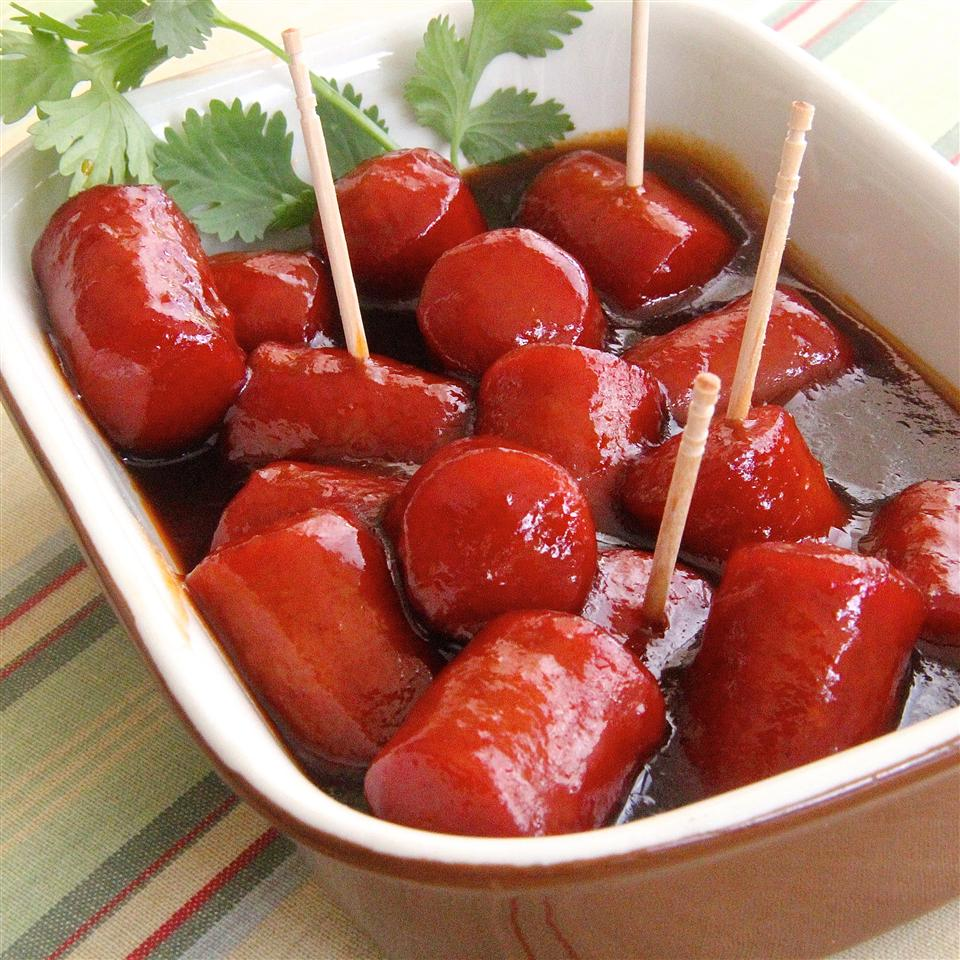

Hot Dogs

Hot Dog Bourbon Appetizers
It can't get any easier than this. Serve these hot dog appetizers at fancy occasions such as weddings.
Ingredients
- 1 (16 ounce) package hot dogs, cut into 1-inch pieces.
- 1/2 cup brown sugar
- 1/2 cup ketchup
- 1/2 cup bourbon
Steps
- Mix hot dogs, brown sugar, ketchup, and bourbon in a saucepan; bring to a boil. Cook, stirring occasionally,
until hot dogs are cooked through and evenly coated, about 10 minutes. Transfer to a slow cooker to keep
warm for serving.
back